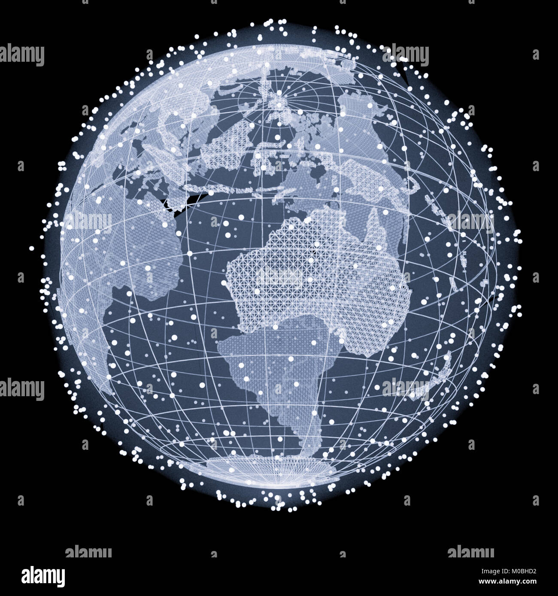

Free Responsabilité environnementale chez Free
L'industrie des télécommunications, bien que fondamentale pour
notre connectivité mondiale et notre économie numérique, est
intrinsèquement liée à plusieurs impacts environnementaux.
Dans ce contexte, Free a démontré son engagement en faveur de
l'environnement à travers plusieurs initiatives publiques visant à
améliorer sa responsabilité environnementale. Leur stratégie
englobe des efforts pour réduire la consommation d'énergie.

En regardant au-delà de Free et en comparant son engagement avec
celui d'autres opérateurs télécoms, il est évident que l'industrie
dans son ensemble fait des pas vers une plus grande durabilité.
Cependant, les stratégies adoptées pour y parvenir peuvent
grandement varier.
En résumé, la responsabilité environnementale est devenue un
élément indissociable de la stratégie globale de toute entreprise
moderne, et le secteur des télécommunications ne fait pas
exception. À travers ses diverses initiatives et politiques, Free illustre son engagement à contribuer à un avenir plus vert et plus durable.